Plataforma digital para la inspección de puentes históricos con inteligencia artificial
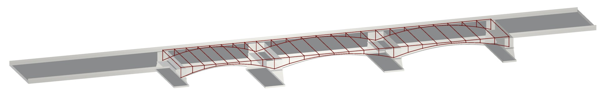
Modelo estructural del Puente Balta (Lima, 1871) superpuesto a su geometría
AutoresLuis Anthony Ñuñuvero Castillo Anthony Boris Tarazona Cerna
AsesorRick Milton Delgadillo Ayala
InstituciónUniversidad Peruana de Ciencias Aplicadas Lima, noviembre de 2026
Acerca de este manual
Cómo está organizado
El capítulo 1 fija el objetivo y el alcance del manual. El capítulo 2 presenta la aplicación, sus requisitos y su instalación. Los capítulos 3 a 6 siguen el orden del menú principal: Inicio, Gemelo digital, Monitoreo con IA e Inspección y gestión. El capítulo 7 reúne el glosario, las preguntas y problemas frecuentes y el control de cambios, y el apéndice A describe en una línea cada botón de la aplicación.
Para empezar a usar la aplicación basta leer los capítulos 2 y 4, que recorren el registro completo del Puente Balta. Para el trabajo de campo, los capítulos 5 y 6.
Convenciones
Notación
Significado
Gemelo digital › Nube, modelo e IA
Ruta de menús: pestaña del menú principal › opción del submenú.
Calcular modos
Botón o control de la aplicación, con el texto exacto que muestra.
1 en el margen
Paso de un procedimiento; se sigue en orden.
1 sobre una figura
Llamada; se explica en la leyenda debajo de la figura.
i Nota
Información que ayuda a entender o a evitar un error menor.
! Importante
Límite de la aplicación o situación que cambia la interpretación de un resultado.
Unidades
La aplicación trabaja en el sistema internacional: longitudes y cotas en metros (m), frecuencias en hercios (Hz), masas en toneladas (t), módulo de elasticidad en gigapascales (GPa) y densidad en t/m³. Las posiciones a lo largo del puente se miden en metros sobre su eje. Los decimales se escriben con coma.
Verificación del programa
Cada versión pasa un conjunto de pruebas automáticas antes de publicarse; la versión 2.20.2 pasó las 53. El modelo de vibración de la aplicación se comparó con OpenSees (módulo Verificación) y con Ansys Mechanical APDL: en el Puente Balta los 8 primeros modos coinciden con una diferencia de frecuencia máxima de 0,001 % y un MAC de 1,000 (sección 4.6).
PuenteGemelo es una herramienta de apoyo a la inspección. No reemplaza la evaluación de un ingeniero ni constituye una verificación de seguridad o de capacidad resistente. Los resultados dependen de la calidad de la nube de puntos y de los datos del puente que ingrese el usuario.
Qué cubre este manual, para quién está escrito y qué documentos conviene tener a mano.
1.1 Objetivo
Este manual explica cómo usar PuenteGemelo para registrar un puente a partir de su nube de puntos, obtener su modelo estructural y sus modos de vibración, entrenar la inteligencia artificial que orienta la inspección y llevar la ficha de inspección del puente según la guía del MTC. Está dirigido a los inspectores y a los ingenieros que usan la aplicación, no a quienes la programan.
1.2 Alcance
El manual cubre la versión 2.20.2, tanto en su versión web como en el programa de escritorio para Windows, macOS y Linux, que tienen las mismas funciones. Describe los cinco módulos del menú principal y la conexión con Ansys Mechanical APDL. Los ejemplos y las figuras usan la nube de puntos del Puente Balta.
No se explica aquí la teoría de los métodos que usa la aplicación (detección de apoyos, modelo de barras, análisis modal, entrenamiento de la IA); esa parte se desarrolla en la tesis.
1.3 Documentos a consultar
Ministerio de Transportes y Comunicaciones. Guía para Inspección de Puentes (Directiva N.° 01-2006-MTC/14).
Ministerio de Transportes y Comunicaciones. Manual de Puentes (camión de diseño HL-93).
Ñuñuvero Castillo, L. A. y Tarazona Cerna, A. B. (2026). Implementación de una plataforma digital para la inspección de puentes históricos con inteligencia artificial: caso Puente Balta. Tesis, UPC.
Documentación de CloudCompare, para convertir nubes E57 o LAZ a PLY.
Documentación de Ansys Mechanical APDL, para correr el macro que exporta la aplicación.
02
Sobre el sistema
Qué es PuenteGemelo, qué se necesita para usarlo y cómo está organizada la pantalla.
2.1 Descripción y características
PuenteGemelo reúne, para cada puente, su ficha de inspección, un modelo estructural obtenido de la nube de puntos (el gemelo digital) y una inteligencia artificial entrenada con ese modelo. La aplicación compara la vibración medida en campo con la del modelo y la IA indica en qué zona conviene revisar primero. La decisión sobre el estado del puente es siempre del inspector.
Todos los cálculos se hacen en la computadora del usuario; la nube de puntos y los datos del puente no se envían a ningún servidor. Entre sus características están:
Lectura de nubes de puntos en PLY, LAS, XYZ, TXT o CSV.
Detección del tablero, los pilares y los estribos, medición de sus dimensiones y separación de los elementos del puente, que se descargan como modelo IFC.
Informe de qué parte de cada elemento quedó registrada y completado de los huecos con la geometría del mismo puente, siempre marcado.
Modelo de barras con sus modos de vibración, exportable a Ansys para comparar resultados.
IA (bosque aleatorio) que señala la zona probablemente dañada a partir de frecuencias y formas modales.
Ficha de inspección del MTC con inventario, defectos, panel fotográfico e informe imprimible.
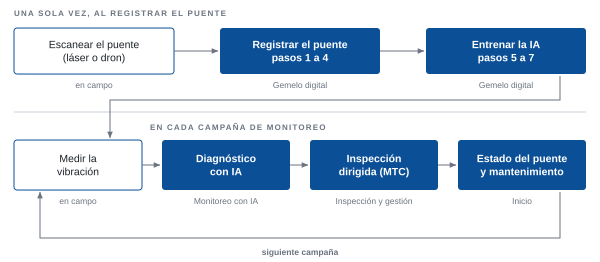
Figura 2.1 Ciclo de trabajo con PuenteGemelo: lo que se hace una sola vez y lo que se repite en cada campaña.
2.2 Requisitos mínimos
Elemento
Requisito
Versión web
Navegador actualizado (Chrome, Edge o Firefox) con conexión a internet para abrir la página y para la vista 3D.
Programa de escritorio
Windows, macOS o Linux. Funciona sin internet una vez instalado.
Nube de puntos
Coordenadas x, y, z en las tres primeras columnas, en metros, centímetros o milímetros. En las pruebas se usaron nubes de hasta 1,2 millones de puntos.
Medición de vibración
Opcional. Archivo CSV de acelerómetros o de un celular con la aplicación phyphox.
Ansys
Opcional. Ansys Mechanical APDL; la versión Student admite hasta 128 000 nodos y elementos, suficiente para los modelos que exporta la aplicación.
2.3 Principales funcionalidades y mapa de navegación
El menú principal tiene cinco módulos. Cada uno abre un submenú con sus herramientas.
InicioMis puentesEstado del puente
Gemelo digitalNube, modelo e IA (pasos 1 a 7)Sismo registrado
Monitoreo con IAVibración medida e IA
Inspección y gestiónInspección de campo (MTC)Carga vehicular HL-93Deterioro y mantenimiento
VerificaciónValidaciónDatos y procedencia
Figura 2.2 Mapa de navegación de PuenteGemelo.
Tabla 2.1 Funcionalidades por módulo.
Módulo
Funcionalidad
Inicio
Lista de puentes, puente activo, importación y exportación de proyectos (.puente), estado del puente y alertas.
Gemelo digital
Registro del puente en siete pasos, desde la nube de puntos hasta el informe, y registro sísmico.
Monitoreo con IA
Medición de vibración, identificación de frecuencias, comparación con el modelo y diagnóstico con la IA.
Inspección y gestión
Ficha de inspección del MTC, carga vehicular HL-93 y deterioro con plan de mantenimiento.
Verificación
Comparación con OpenSees, pruebas de la IA en varios tipos de puente y procedencia de los datos.
Con el Puente Balta de ejemplo activo, Gemelo digital muestra además el material de la primera parte de la tesis (modelo 3D y nube, simulación e IA, comparación de escenarios y dinámica) e Inspección y gestión agrega las prioridades de inspección de ese modelo.
2.4 Partes de la pantalla
12345678
Figura 2.3 Pantalla principal en Inicio › Mis puentes.
1Menú principal. Cambia de módulo.2Submenú. Herramientas del módulo elegido; a la derecha, una descripción corta del módulo.3Puente activo. Todo lo que se haga se guarda en ese puente. Desde la lista también se agrega uno nuevo.4Mostrar ayuda, Guía y Acerca de. La ayuda agrega un texto explicativo en cada pantalla; Guía abre este manual.5Panel izquierdo. Acciones o pasos de la herramienta abierta. En el registro muestra los siete pasos y cuáles están listos.6Área de trabajo. Tablas, gráficos y formularios de la herramienta.7Panel derecho. Indicaciones cortas sobre lo que se ve en el área de trabajo.8Barra de estado. Puente activo y versión de la aplicación.
2.5 Instalación y acceso
Versión web
No requiere instalación. Se abre en casvilluis-afk.github.io/Balta-viewer/plataforma. Los puentes quedan guardados en ese navegador.
Programa de escritorio
Los instaladores se descargan de la sección Releases del repositorio del proyecto en GitHub (Balta-viewer), en la versión más reciente.
Sistema
Archivo
Al instalar
Windows
PuenteGemelo-2.20.2-Windows-instalador.exe
Windows avisa que el instalador no está firmado: pulse «Más información» y luego «Ejecutar de todas formas».
macOS
PuenteGemelo-2.20.2-Mac.dmg
Arrastre la aplicación a Aplicaciones. La primera vez, ábrala con clic derecho › Abrir, porque no está firmada.
Linux
PuenteGemelo-2.20.2-Linux.AppImage
Dé permiso de ejecución al archivo y ábralo.
i
Actualizar. Para pasar a una versión nueva, exporte antes sus puentes como archivo .puente (sección 3.1) e instale la nueva versión encima de la anterior.
03
Inicio
La lista de puentes y el resumen del puente activo. Es la pantalla que se abre al iniciar la aplicación.
3.1 Mis puentes
Ubicación: Inicio › Mis puentes
Lista los puentes guardados en la computadora o en el navegador y el puente de ejemplo (Balta). Desde aquí se agrega un puente, se abre un archivo .puente o se exporta uno para llevarlo a otra computadora.
Para llevar un puente a otra computadora
1En Mis puentes, ubique el puente y pulse Exportar .puente. Se descarga un archivo con todo el proyecto.
2En la otra computadora, abra Inicio › Mis puentes y pulse Abrir un archivo .puente.
3Elija el archivo. El puente aparece en la lista y queda como puente activo.
i
Respaldo. Los puentes quedan guardados solo en la computadora o el navegador donde se trabajó. Conviene exportar el archivo .puente cada cierto tiempo.
3.2 Estado del puente
Ubicación: Inicio › Estado del puente
Resume el puente activo: una lista de tareas con el siguiente paso y su botón Hacer ahora; los indicadores (índice de salud, calificación MTC, último diagnóstico de la IA, carga vehicular, vida útil estimada y próxima inspección); las alertas, y la historia del puente con cada inspección, medición y diagnóstico.
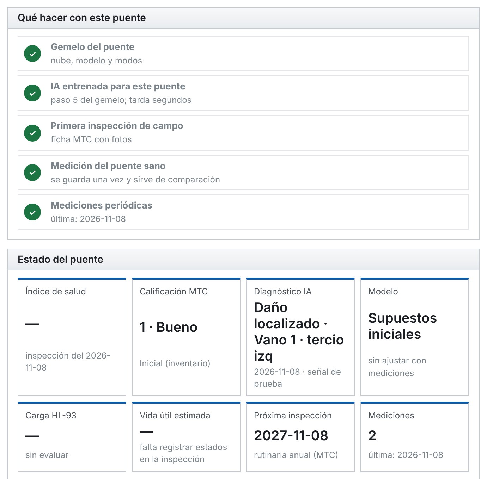
Figura 3.1 Estado del puente: lista de tareas e indicadores.
04
Gemelo digital: registro de un puente
El registro convierte la nube de puntos en un modelo del puente. Se hace una sola vez, en siete pasos que la aplicación muestra en el panel izquierdo; cada paso se habilita cuando el anterior queda listo.
Puente Balta, Lima (1871). Tres arcos de fierro fundido sobre el río Rímac.
Nube de puntos
Escáner láser terrestre, 601 243 puntos, 145,6 m de largo, con intensidad y color.
Resultado esperado
Dos estribos y dos pilares, tres arcos de unos 25 m de luz, modelo con sus modos de vibración, verificación en Ansys e IA entrenada.
Al terminar el capítulo podrá registrar cualquier puente con su nube de puntos, revisar qué parte del puente quedó registrada y verificar el modelo con Ansys.
Lo que la aplicación puede medir depende de cómo se hizo el escaneo. Las recomendaciones siguientes salen de las pruebas con la nube del Balta y de otros puentes.
Las dos márgenes. Con una sola margen falta una cara de cada pilar y de cada arco, y el espesor del pilar no se puede medir.
Una estación bajo cada vano. Es la zona que más se pierde: en el Balta, bajo el tramo 2 solo el 68 % del largo tiene puntos.
Los estribos de frente. Siga el tablero 10 a 15 m más allá de cada estribo. En la nube del Balta el estribo de la margen izquierda no aparece.
Unos 5 cm entre puntos. Con 15 cm o más se siguen detectando los apoyos, pero el canto y el espesor pierden precisión y las barandas y péndolas delgadas desaparecen.
Buen registro entre estaciones. Un error de registro aparece luego como un escalón en el mapa de desviaciones y como caras dobles en los pilares.
Recorte previo. Calles, edificios y el cauce solo estorban; si no se recortan en el escáner, se recortan en el paso 1.
4.2 Paso 1. Nube de puntos
Ubicación: Inicio › Mis puentes › Agregar un puente
1Pulse Elegir archivo o arrastre el archivo al recuadro. Si la nube está en E57 o LAZ, conviértala antes a PLY con CloudCompare.
2Indique el eje vertical (Z o Y hacia arriba) y las unidades del archivo.
3Escriba el nombre del puente y revise la elevación y la planta.
4Si la nube incluye accesos o calles, haga clic en la planta en un extremo del tramo y luego en el otro, ajuste el ancho y pulse Recortar.
5Pulse Continuar.
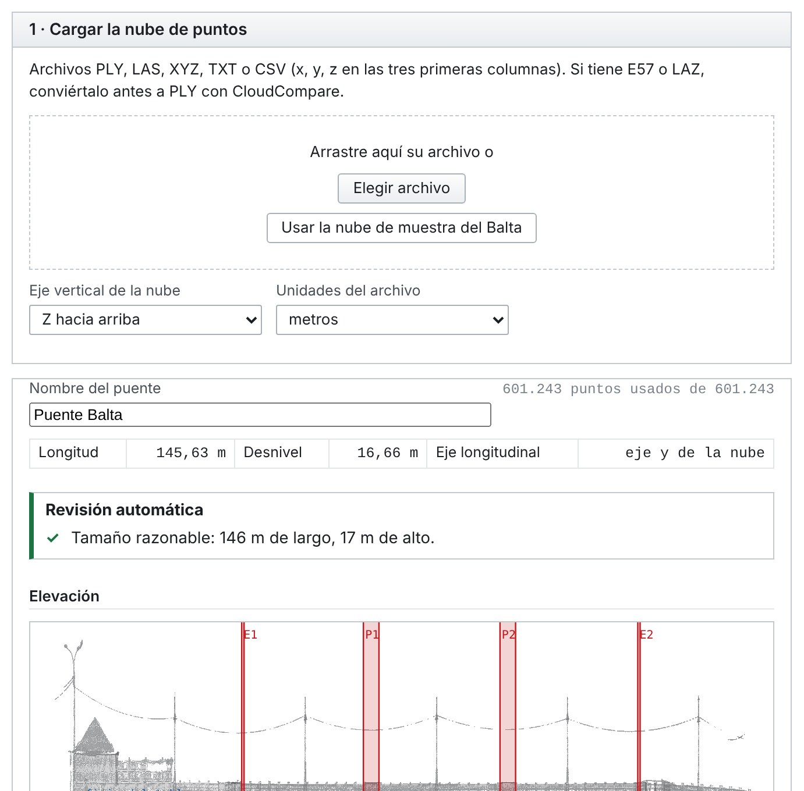
Figura 4.1 Paso 1 con la nube del Puente Balta cargada (601 243 puntos).
4.3 Paso 2. Tablero y apoyos
Ubicación: Gemelo digital › Nube, modelo e IA › 2. Tablero y apoyos
La aplicación estima la superficie del tablero y busca las caras de pilares y estribos. Lo detectado se dibuja sobre la elevación de la nube y se lista en la tabla de apoyos, donde se puede corregir.
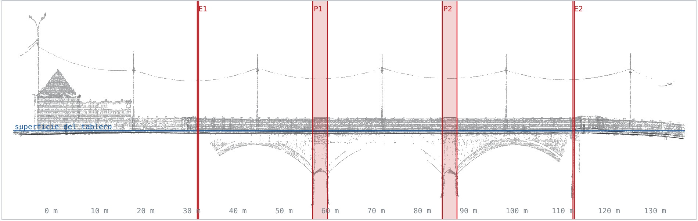
123
Figura 4.2 Elevación de la nube del Puente Balta con los apoyos detectados.
1Superficie del tablero estimada (línea azul).2Estribo: línea roja simple, con su rótulo E1, E2…3Pilar: banda roja entre sus dos caras, con su rótulo P1, P2…
1Compare las líneas rojas con el puente real. Cada pilar debe tener su banda y cada extremo su estribo.
2Si falta un apoyo, haga clic sobre la elevación en su posición. Si sobra uno (un árbol, un poste), pulse Quitar en su fila.
3Si el tablero o el terreno no coinciden con la nube, corrija las cotas y pulse Detectar apoyos otra vez.
4Pulse Identificar elementos y, si lo necesita, Generar nube completada (sección 4.4). Luego pulse Continuar.
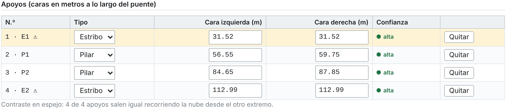
123
Figura 4.3 Tabla de apoyos. Las caras se dan en metros a lo largo del puente.
1Tipo de apoyo; se puede cambiar de pilar a estribo.2Confianza: alta si el apoyo reaparece al recorrer la nube desde el otro extremo; media si solo aparece en un sentido.3Quita el apoyo de la lista.
i
Pilar inferido. Si el fuste de un pilar no está en la nube pero dos arcos seguidos arrancan en el mismo lugar, la aplicación lo agrega como inferido. Confírmelo en campo.
4.4 Lo que la nube dice del puente
Ubicación: paso 2, debajo de la tabla de apoyos
Debajo de los apoyos, el paso 2 muestra lo que se puede medir en la nube, ordenado en cinco secciones. Nada de esto reemplaza la visita: indica qué vio la nube y qué no.
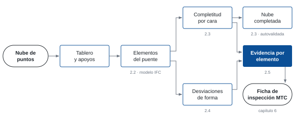
Figura 4.4 Qué se obtiene de la nube en el paso 2 y adónde va cada resultado. Los números indican la sección del paso 2.
Tabla 4.1 Secciones del paso 2.
Sección
Contenido
2.1 Calidad de la nube
Cobertura de la calzada y de la parte inferior, separación entre puntos, extremos cortados y recomendaciones para la siguiente captura. Con intensidad o color, separa la vegetación y busca zonas anómalas.
2.2 Medidas y elementos
Ancho y canto del tablero, espesor y ancho de los pilares. Identificar elementos separa tableros, pilares, estribos, arcos, montantes, péndolas, tirantes y barandas; Descargar modelo IFC genera el modelo para Revit, Tekla o BlenderBIM.
2.3 Completitud y nube completada
Porcentaje visto de cada cara de cada elemento y desde dónde volver a escanear lo que quedó por debajo del 60 %. Completado de los huecos con la geometría del mismo puente.
2.4 Forma y cambios
Desviaciones respecto de la forma ideal (hundimientos, abultamientos, pérdida de sección) y comparación con una nube de otra fecha.
2.5 Evidencia
Lo que la nube muestra de cada elemento, listo para pasar a la ficha de inspección.
Figura 4.5 Elementos identificados en la nube del Balta, con sus medidas y de dónde sale cada una.
Completitud y nube completada
La tabla de completitud da el porcentaje visto de cada cara. En el Balta el índice global es de 88 %; lo que falta es el estribo izquierdo, que no aparece en la nube.
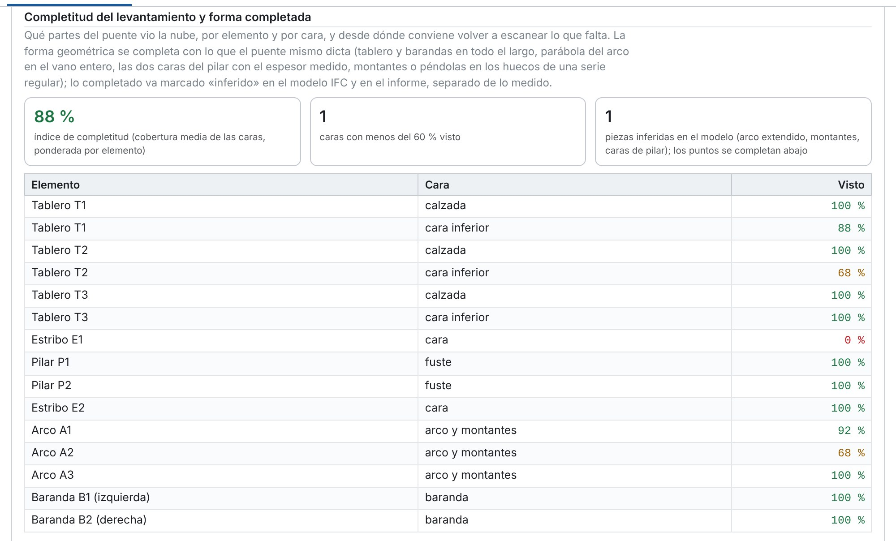
Figura 4.6 Completitud del levantamiento del Balta, por elemento y por cara.
Al pulsar Generar nube completada, la aplicación oculta primero parches de la propia nube, los completa con cada regla y mide cuántos puntos acertó. Una regla solo se aplica en ese puente si se pudo probar con al menos 50 puntos y acertó al menos el 80 %. En el Balta pasaron dos: la sección transversal repetida del tablero (99 %) y la simetría de los pilares (88 %).
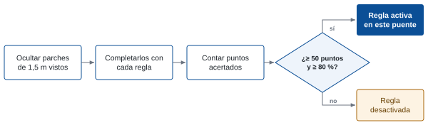
Figura 4.7 Autovalidación: cada regla se prueba en la misma nube antes de usarse.
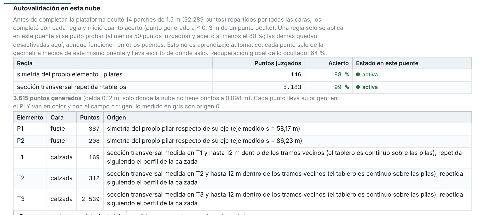
Figura 4.8 Autovalidación y puntos generados por regla en la nube del Balta.
En Completado por elemento se elige un elemento y se ve cada cara en un mapa de celdas: gris lo medido, en color lo generado según la regla y en blanco lo que sigue sin puntos. Para cada hueco se indica con qué regla se completó o por qué no se pudo.
Figura 4.9 Calzada del tramo T1: en morado, lo generado con la sección transversal repetida.
i
Medido, inferido y no completable. Lo inferido no sale de puntos de la nube sino de la geometría del propio puente, por ejemplo la otra cara de un pilar con su espesor medido. Lo que no se puede deducir, como un estribo ausente, se declara no completable y no se rellena. Lo generado no se usa para medir daños.
Desviaciones y evidencia
El mapa de desviaciones marca en rojo lo más bajo y en azul lo más alto que la forma ideal; debajo se listan las zonas para revisar. Son zonas para mirar en campo, no daños confirmados: un objeto suelto sobre la calzada también aparece.
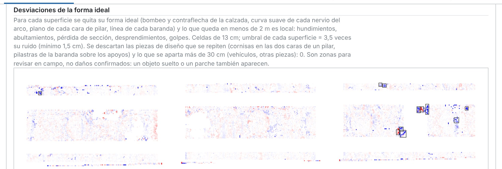
Figura 4.10 Desviaciones de la forma ideal en la calzada del Balta.
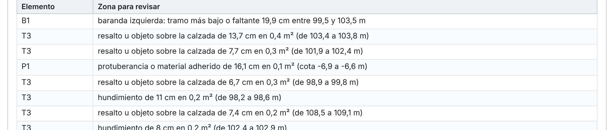
Figura 4.11 Zonas para revisar, ordenadas por tamaño.
La sección de evidencia resume, elemento por elemento, cuánto lo vio la nube y lo que cae en él. El botón Llevar al expediente de inspección (MTC) pasa esta evidencia a la ficha (capítulo 6).
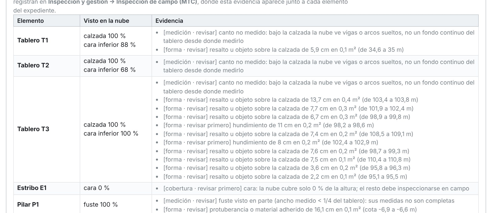
Figura 4.12 Evidencia de la nube por elemento.
4.5 Pasos 3 y 4. Geometría, datos y modos
Paso 3. Geometría
1Elija el tipo de puente. La aplicación propone uno según la nube (arcos, vigas o armadura).
2Pulse Calcular geometría. Para arcos, la tabla muestra la luz, la flecha y qué parte del intradós se vio.
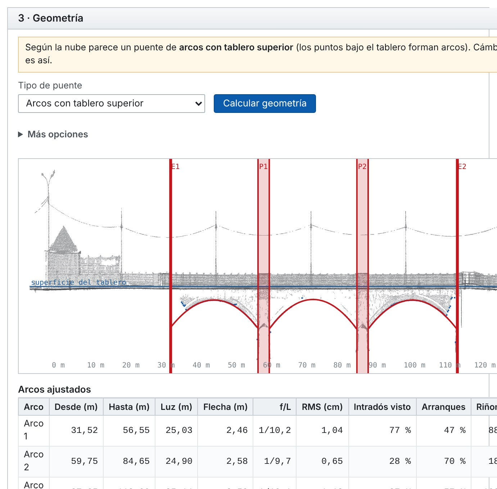
Figura 4.13 Paso 3: arcos ajustados en la nube del Balta.
i
Tipo de puente. Si el ajuste de arcos falla, casi siempre el puente es de vigas.
Paso 4. Datos del puente y modos
1Elija el material y escriba los datos que la nube no muestra: secciones, peso del tablero y propiedades de los pilares. Las etiquetas amarillas marcan lo que todavía no se revisó.
2Pulse Calcular modos. La tabla muestra la frecuencia, el periodo y la dirección de cada modo.
3Pulse Ver nube y modelo en 3D para revisar el modelo sobre la nube.
Figura 4.14 Material y datos del puente.
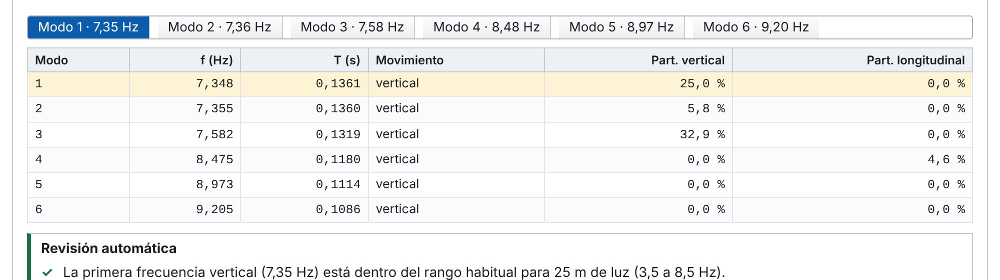
Figura 4.15 Modos de vibración del modelo del Balta.
4.6 Verificación del modelo con Ansys
Ubicación: paso 4, debajo de la tabla de modos
La aplicación exporta el mismo modelo a un macro de Ansys Mechanical APDL (elementos BEAM188, masas en los nodos, mismos apoyos) y compara después los resultados de Ansys con los suyos, modo por modo.
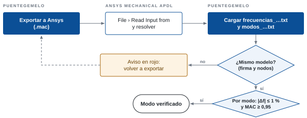
Figura 4.16 Flujo de la verificación con Ansys. Si el archivo no corresponde al modelo actual, la comparación no se acepta.
1Pulse Exportar a Ansys (.mac). Marque con deformación por cortante solo si quiere incluir ese efecto; sin marcarlo, Ansys debe dar las mismas frecuencias.
2En Mechanical APDL use File › Read Input from y elija el macro. Al terminar quedan frecuencias_…txt y modos_…txt en la carpeta de trabajo.
3En la aplicación pulse Cargar resultados de Ansys y elija los dos archivos.
4Revise la tabla. Un modo concuerda si la diferencia de frecuencia es de 1 % o menos y el MAC (parecido de la forma modal) es de 0,95 o más.
Figura 4.17 Comparación con Ansys del modelo del Balta: los 8 modos concuerdan.
!
Resultados de otro modelo. Si los archivos son de otro macro (otro puente, otros apoyos o datos cambiados después de exportar), la aplicación lo indica en rojo y no toma la comparación como verificación. Exporte el macro otra vez y vuelva a correrlo.
4.7 Pasos 5 a 7. IA, prueba e informe
Paso 5. Entrenar la IA
1Pulse Entrenar la IA. La aplicación simula unas 1300 combinaciones de daño en las zonas del puente; con el Balta tarda alrededor de medio minuto.
2Lea el resumen: daños detectados, zona correcta, vano correcto y falsas alarmas.
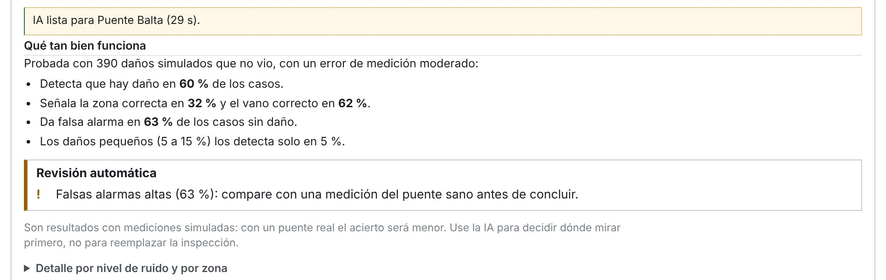
Figura 4.18 Resultado del entrenamiento de la IA para el Balta.
!
Daños simulados. Estos porcentajes se calculan con daños simulados. Con un puente real el acierto será menor; por eso la IA se usa para decidir dónde mirar primero y no para reemplazar la inspección.
Paso 6. Probar la IA
Se elige una zona y un porcentaje de daño; la aplicación simula una medición con error y la IA, sin conocer la respuesta, indica la zona que cree dañada. Repetir 100 mediciones muestra con qué frecuencia acierta.
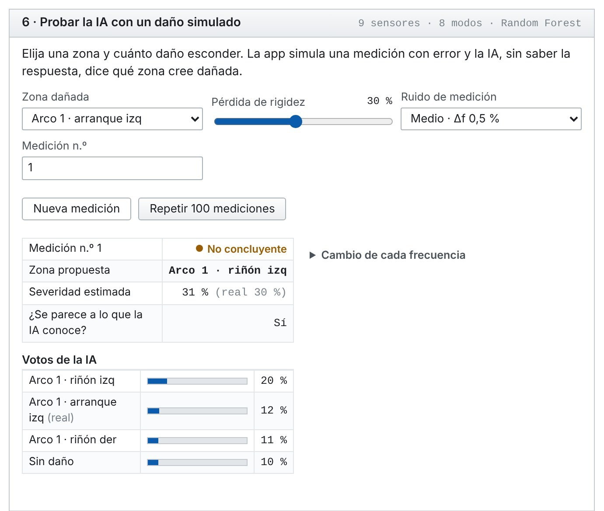
Figura 4.19 Prueba de la IA con un daño simulado en el arco 1.
Paso 7. Prioridades e informe
Ordena las zonas para la inspección de campo según cuánto afecta su daño a la vibración, cuánto de ellas no se vio en la nube y qué tan difícil le resulta a la IA. Debajo está el informe completo del registro, que se puede copiar o descargar.
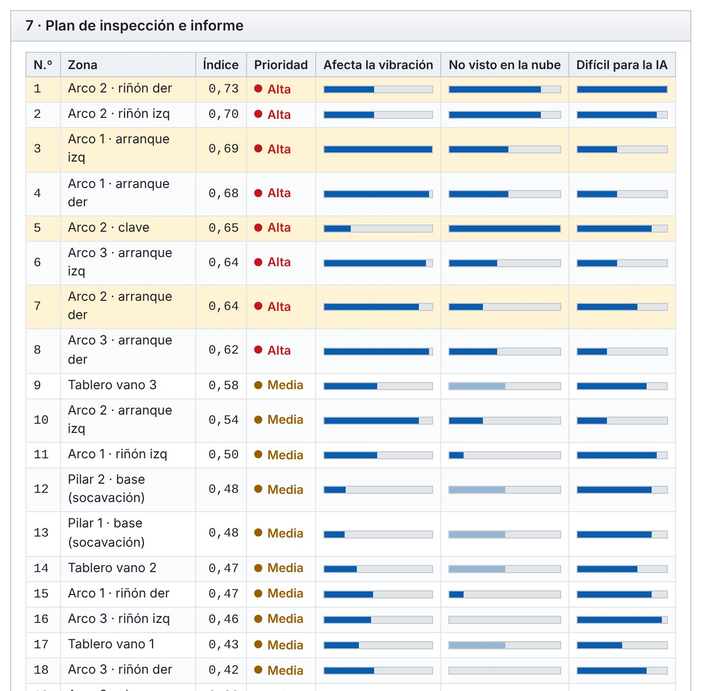
Figura 4.20 Orden de verificación en campo para el Balta.
Sismo registrado
Ubicación: Gemelo digital › Sismo registrado
Aplica un registro sísmico del CISMID o del IGP al modelo del puente y muestra su respuesta.
05
Monitoreo con IA
Cómo medir la vibración del puente en campo y qué hacer con el diagnóstico de la IA.
Ubicación: Monitoreo con IA › Vibración medida e IA
En campo
1Coloque el acelerómetro o el celular (phyphox, medición «Aceleración (sin g)») sobre el tablero, firme y horizontal, en los puntos S1 a S9 que indica la aplicación: cuartos y centro de cada vano. Con un sensor se obtienen frecuencias; con tres o más, también la forma de vibrar.
2Grabe entre 10 y 20 minutos con el tránsito normal, sin caminar cerca del sensor.
3Anote la fecha, la hora y la temperatura del aire, y exporte el archivo como CSV.
En la aplicación
1Cargue la medición e indique en qué punto estuvo cada sensor.
2Pulse Analizar la medición.
3La primera vez, si el puente está sano, pulse Guardar como medición del puente sano. Las mediciones siguientes se comparan con esa.
4Pulse Diagnosticar con IA e interprete el resultado con la tabla 5.1.
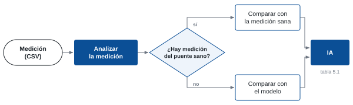
Figura 5.1 Cómo se llega al diagnóstico a partir de una medición.
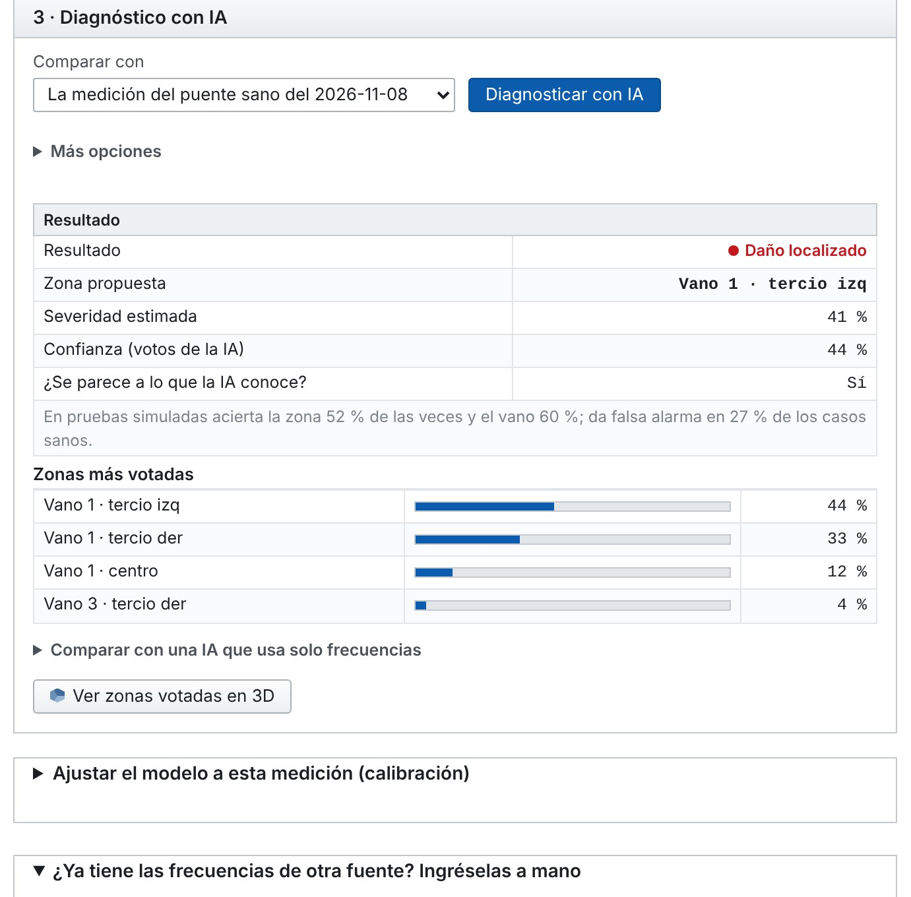
Figura 5.2 Diagnóstico con IA: daño localizado en el tercio izquierdo del vano 1.
Tabla 5.1 Resultados del diagnóstico.
Resultado
Qué hacer
Sin daño detectado
La vibración se parece a la del puente sano. Continuar con la inspección rutinaria.
Daño localizado
Inspeccionar primero la zona señalada, con más detalle.
No concluyente
Tomar las zonas más votadas como orientación y repetir la medición.
Medición distinta a lo esperado
Revisar sensores, puntos y duración. Si la medición está bien, algo cambió que el modelo no explica: programar una inspección especial.
i
Temperatura. La temperatura cambia las frecuencias casi tanto como un daño. Mida a horas y temperaturas parecidas y registre siempre la temperatura. Sin una medición a mano, Probar con una señal simulada genera una para practicar.
06
Inspección, gestión y verificación
La ficha de inspección del MTC, las herramientas de carga y mantenimiento y las pruebas de la propia aplicación.
6.1 Inspección de campo (MTC)
Ubicación: Inspección y gestión › Inspección de campo (MTC)
Ficha de inspección según la Directiva N.° 01-2006-MTC/14, con inventario, calificación por elemento, defectos, panel fotográfico e informe imprimible.
1Pulse Nueva y registre la fecha, el tipo de inspección y los inspectores.
2Califique cada elemento de 0 (muy bueno) a 5 (pésimo). La escala del MTC se muestra en el panel derecho.
3Si es posible, registre qué cantidad de cada elemento está en estado bueno, regular, malo o severo (por ejemplo, 12 m de viga en estado regular). Con estos datos se calcula la salud del puente y el plan de mantenimiento.
4Registre cada defecto con + Defecto (fisuras, corrosión, socavación u otros), con su ubicación, extensión y medidas.
5Agregue las fotos en el panel fotográfico y pulse Informe imprimible para guardar el informe en PDF.
La primera vez se llena también el Inventario (Anexo 03-01). Si antes se llevó la evidencia de la nube (sección 4.4), la longitud, los tramos, las luces y algunas cantidades ya aparecen llenas, y arriba de la ficha se muestra el recuadro «Evidencia de la nube».
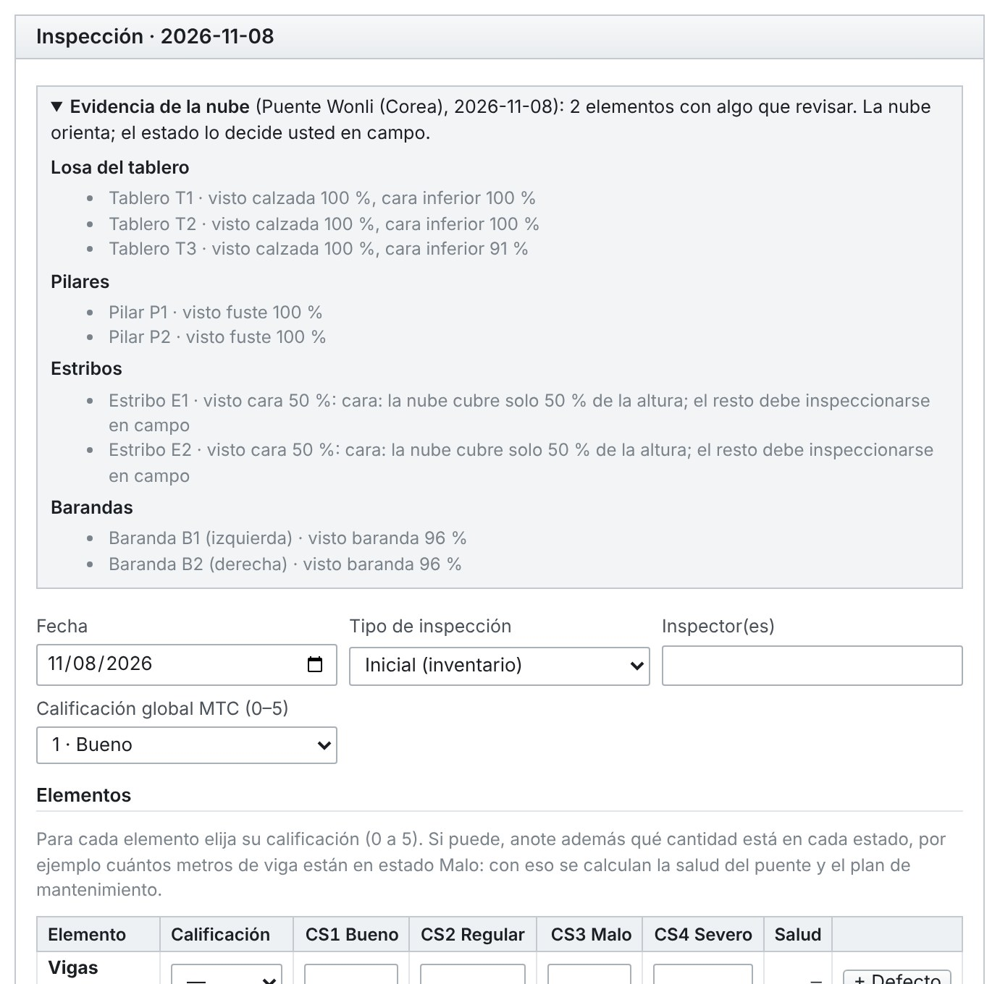
Figura 6.1 Ficha de inspección con la evidencia de la nube. Los cambios se guardan solos.
6.2 Carga vehicular HL-93
Ubicación: Inspección y gestión › Carga vehicular HL-93
Calcula los esfuerzos y la flecha con el camión de diseño del Manual de Puentes. Para saber si el puente resiste deben ingresarse las resistencias del material.
6.3 Deterioro y mantenimiento
Ubicación: Inspección y gestión › Deterioro y mantenimiento
Con las cantidades por estado de la inspección, proyecta la salud del puente en el tiempo y propone un plan de mantenimiento según el presupuesto.
6.4 Verificación
Ubicación: Verificación › Validación y Verificación › Datos y procedencia
Muestra la concordancia del modelo de la aplicación con OpenSees, las pruebas de la IA con distintos tipos de puente y el origen de cada dato usado.
07
Referencia
Términos, dudas y problemas habituales, e historial de versiones de la aplicación.
7.1 Glosario de términos
Término
Definición
Autovalidación
Prueba que hace la aplicación en la misma nube: oculta parches, los completa y mide el acierto de cada regla.
Completitud
Porcentaje de una cara de un elemento que tiene puntos en la nube.
Falsa alarma
Caso en que la IA indica daño en un puente sin daño.
Gemelo digital
Modelo del puente construido con su nube de puntos, que se actualiza con las inspecciones y mediciones.
IFC
Industry Foundation Classes, formato abierto de modelos BIM.
Inferido
Elemento o parte que no está en la nube pero que se deduce de la geometría del puente.
MAC
Modal Assurance Criterion. Indica cuánto se parecen dos formas modales (1 = iguales).
Macro (.mac)
Archivo de comandos que Ansys Mechanical APDL ejecuta para crear y resolver el modelo.
Modo de vibración
Forma en que vibra el puente a una de sus frecuencias propias.
Nube completada
Nube original más los puntos generados con la geometría del mismo puente, cada uno con su regla de origen.
Nube de puntos
Conjunto de puntos con coordenadas x, y, z obtenido con escáner láser o dron.
Archivo .puente
Archivo con todo el proyecto de un puente, para respaldo o para llevarlo a otra computadora.
7.2 Preguntas frecuentes
¿Se necesita internet?
El programa de escritorio funciona sin internet. La versión web necesita internet para abrirse y para la vista 3D. En los dos casos los cálculos se hacen en la computadora del usuario.
¿Funciona con cualquier puente?
Reconoce y mide puentes de vigas, losas y cajones, arcos con el tablero encima o debajo, armaduras, atirantados y combinaciones de estos. El modelo de vibración y la IA se arman para arcos con el tablero encima, vigas y armaduras; en atirantados y arcos con el tablero colgado representan solo el tablero sobre sus apoyos. No están soportados los puentes colgantes, extradosados, móviles ni las bóvedas de piedra rellenas.
¿Qué pasa si los datos del paso 4 no son exactos?
El modelo vibrará distinto del puente real y esa diferencia puede parecer daño. Conviene guardar una medición del puente sano y comparar contra ella, o ajustar el modelo con Ajustar el modelo a esta medición.
¿Es necesario Ansys?
No. La aplicación calcula los modos por su cuenta; Ansys solo sirve para comprobar ese cálculo con un programa comercial. Que el modelo represente al puente real depende de los datos del paso 4 y de una medición de vibración.
¿Se puede usar la nube completada para medir daños?
No. Sirve para ver la forma completa, para el modelo y para planificar la siguiente captura. Los daños se miden solo sobre los puntos medidos.
¿Cómo se revisa el archivo PLY de la nube completada?
Ábralo en CloudCompare y coloree por el campo origen: 0 es lo medido y cada número siguiente una regla distinta, que se lista en el encabezado del archivo.
7.3 Problemas frecuentes
Problema
Solución
El archivo E57 o LAZ no se puede cargar.
Convertir la nube a PLY con CloudCompare y cargarla de nuevo.
El puente aparece del tamaño equivocado o de costado.
En el paso 1, revisar las unidades del archivo y el eje vertical.
Falta un pilar o aparece un árbol como pilar.
En el paso 2, hacer clic en la elevación para agregar el apoyo o pulsar Quitar. Con color o intensidad, usar Quitar vegetación y volver a detectar.
La nube trae calles o el puente es curvo.
Recortar en el paso 1. Para puentes curvos en planta, activar Seguir su eje en el paso 2 (experimental).
Ansys se cierra con un error de memoria.
En el Mechanical APDL Product Launcher, bajar la memoria reservada (por ejemplo, 1024 MB de espacio de trabajo y 256 MB de base de datos).
La comparación con Ansys sale en rojo.
Los archivos son de otro macro. Exportar el macro desde el modelo actual, correrlo y cargar los archivos nuevos.
«La descarga no está disponible en esta vista».
Abrir la aplicación desde la versión publicada en GitHub Pages o desde el programa de escritorio.
La vista 3D no carga en la web.
Comprobar la conexión a internet o usar el programa de escritorio.
7.4 Control de cambios
Versión
Fecha
Cambio
2.15.0
08/11/2026
Ficha de inspección por elemento según la Directiva N.° 01-2006-MTC/14.
2.16.0
09/11/2026
Desviaciones de la forma ideal.
2.17.1
12/11/2026
Completitud, nube completada y autovalidación. Primera versión de la guía.
2.18.0
19/11/2026
Exportación del modelo a Ansys Mechanical APDL.
2.19.0
20/11/2026
Completado de la nube por elemento y paso 2 ordenado en secciones.
2.20.0
20/11/2026
Carga de resultados de Ansys y comparación por MAC.
2.20.2
26/11/2026
Revisión final de la aplicación y nuevo manual de usuario.
A
Referencia rápida de botones
Cada botón de la aplicación con lo que hace, en el orden en que aparece. Las secciones indicadas explican su uso con detalle.
Inicio
Agregar un puente
Abre el registro de un puente nuevo en el paso 1 (3.1).
Abrir un archivo .puente
Carga un puente exportado desde otra computadora (3.1).
Exportar .puente
Descarga el proyecto completo del puente para respaldo o traslado (3.1).
Registro · pasos 1 y 2
Elegir archivo
Carga la nube de puntos (4.2).
Usar la nube de muestra del Balta
Carga una muestra de 186 442 puntos para practicar.
Recortar / Volver a la nube completa
Deja solo el tramo marcado en la planta o deshace el recorte (4.2).
Detectar apoyos otra vez
Repite la detección con las cotas corregidas (4.3).
Quitar
Elimina un apoyo de la tabla (4.3).
Seguir su eje
Mide a lo largo del eje de un puente curvo o quebrado; experimental (7.3).
Quitar vegetación y volver a detectar
Elimina los puntos de vegetación y repite la detección (7.3).
Identificar elementos
Separa los elementos del puente con sus medidas (4.4).
Descargar modelo IFC
Descarga el modelo BIM de los elementos identificados (4.4).
Generar nube completada
Autovalida las reglas y rellena los huecos de la nube (4.4).
Descargar nube completada (.ply)
Nube medida más lo generado, con el campo origen (7.2).
Descargar huecos por elemento (CSV)
Lista de huecos y manchas de cada cara, con su regla o motivo (4.4).
Llevar al expediente de inspección (MTC)
Pasa la evidencia de la nube a la ficha de inspección (6.1).
Registro · pasos 3 a 7
Calcular geometría
Ajusta arcos, vigas o armadura a la nube (4.5).
Calcular modos
Arma el modelo de barras y calcula sus modos de vibración (4.5).
Ver nube y modelo en 3D
Muestra el modelo superpuesto a la nube (4.5).
Planos DXF
Descarga los planos del modelo para AutoCAD.
Exportar a Ansys (.mac)
Descarga el macro del modelo para Ansys Mechanical APDL (4.6).
Cargar resultados de Ansys
Compara frecuencias y formas de Ansys con las de la aplicación (4.6).
Entrenar la IA
Entrena la IA del puente con daños simulados (4.7).
Nueva medición / Repetir 100 mediciones
Prueba la IA con un daño simulado, una vez o cien (4.7).
Copiar informe
Copia el informe del registro (4.7).
Descargar orden de verificación (CSV)
Descarga la lista de zonas ordenadas para la inspección (4.7).
Monitoreo e inspección
Analizar la medición
Obtiene las frecuencias de la medición y las compara (5).
Guardar como medición del puente sano
Fija la medición de referencia (5).
Diagnosticar con IA
Aplica la IA a la medición (5).
Ajustar el modelo a esta medición
Calibra el modelo con las frecuencias medidas (7.2).
Probar con una señal simulada
Genera una medición de práctica (5).
Nueva · + Defecto · Informe imprimible
Crea una inspección, registra un defecto y genera el informe para imprimir (6.1).
 1234
5678
1234
5678